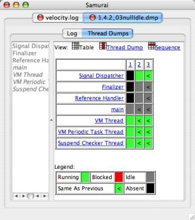
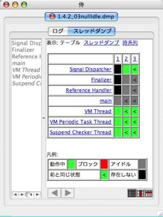
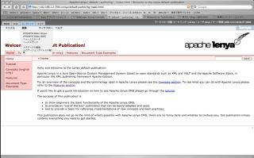
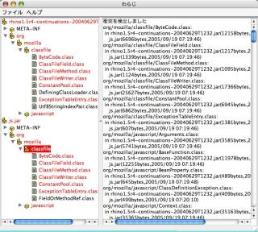
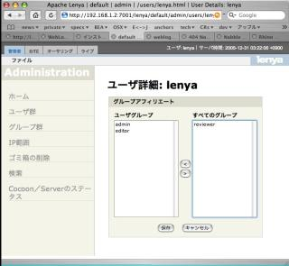
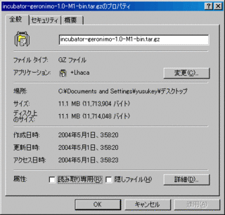
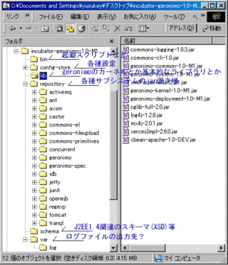
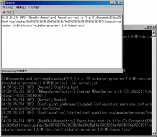

2006年02月03日
SCEがBEA WebLogic Serverを採用
・ソニー・コンピュータエンターテインメント・ヨーロッパがBEA WebLogic Serverを標準として採用
http://www.beasys.co.jp/news/japan/2006/2006020201.html
「この高性能かつ統一されたテクノロジ基盤により、同社は顧客サービスの対応速度を短縮できるようになり、ネットワークでゲームを行う顧客からのサポートへの個別問い合わせの処理コストの削減が可能となります。」
とのことなので、PS3 では Xbox Live 的な展開を図るんでしょうか。
投稿者 yusuke : 04:52 | コメント (0) | トラックバック
2006年02月01日
Project Mustang Regressions Challenge
TSSより
Mustang は Java SE6.0 のこと。Tiger(Java SE5.0)からのリグレッションを探して、Tシャツをゲットしよう！という企画。
リグレッションってのは以前のバージョンでは動いていた箇所にバージョンアップ後バグが発生すること。
とりあえず手元のアプリケーションのテストケースを動かすだけやってみる価値はあるかな？
ベスト5のリグレッションを発見した人には Sun Ultra 20 Workstationが送られるとのこと。
細かいルールについての説明はこちら。
https://mustang.dev.java.net/regchal/regchalrules.html
投稿者 yusuke : 06:29 | コメント (0) | トラックバック
2006年01月25日
JEditorPaneメモ
・テーブル内での折り返し禁止
<td nowrap="true"> は効かないらしい。<td nowrap>はOk
・エンコーディングの指定
JEditorPane.setContentType() で指定しておく。
なぜか meta タグにエンコーディングを記載しておくとレンダリングしてくれず真っ白になってしまう。
幾つか事例は見つかったけど詳細は未調査。
・クラスパス内の画像の表示
ClassPathURLStreamHandler 的なものを作ろうとしたけどなんとか手間を省けないかと考えた。
---------
String baseurl = 画像と同じクラスローダで読み込まれるはずのクラス.class.getProtectionDomain().getCodeSource().getLocation().toString();
if(baseurl.endsWith(".jar")){
baseurl = "jar:"+baseurl+"!/";
}
で baseurl を取得しておいて
<img src="${baseurl}com/mypackage/picture.gif">
---------
といった感じ。jar ファイルからクラスが読み込まれているときだけ JarURLConnectionを使わせるってこと。
これで画像が jar ファイルにあってもクラスパス内に展開されていても表示できる。

JEditorPaneにクラスパスに配置されてる画像を表示したとこ
#Tabel / Thread Dump / Sequence の左側に配置されてるやつ
{kind=link}
投稿者 yusuke : 16:13 | コメント (0) | トラックバック
2006年01月24日
Velocityメモ その２
・Java コードからの移植時、変数名には $ をつけるべし
Javaコードから Velocity のテンプレートに移植する際、変数の参照に全て $ を付けるのを忘れないように。
特にメソッド呼出がネストしているときに忘れやすい。
・変数名は Java コードと同じにすべし
Java で statistic という変数名だったのをテンプレート内では stats という変数名で扱っていてちょっと混乱した。
・Context のチェーンの動作
Context をラップして、セットした場合、inner context には値はセットされない。
不変の変数は inner context にセットしておくべし。
ただし、Map を引数にして Context を生成した場合、セットした変数は全部そのMapに格納される。
ちょっとクセのある動作なので注意。
Context Chaining
どうしたらスレッドダンプの解析結果を見やすく表示できるか模索中

{kind=link}
投稿者 yusuke : 17:52 | コメント (0) | トラックバック
BEA セキュリティアドバイザリ
色々出てますね。
・dev2dev > Advisories and Notifications
http://dev2dev.bea.com/advisoriesnotifications/
日本語はまだ。
・dev2dev Home > リソース > セキュリティアドバイザリ
http://www.beasys.co.jp/dev2dev/resourcelibrary/advisoriesnotifications/
追記:日本語版もでました
投稿者 yusuke : 11:30 | コメント (0) | トラックバック
2006年01月23日
Velocityメモ
侍ではスレッドダンプの解析結果をHTMLで書き出してJEditorPane に表示させてます。
現在のところjava.text.MessageFormatで無理矢理HTMLを構築する仕組み。
HTMLのレイアウトに沿ってJavaでゴリゴリとコードが書いてあるので、非常に美しくないです。
レイアウトに変更があったら Java コードを書き換えないといけないのは非常にメンテナンスしづらい！
HTMLを作るならJSPでしょ、って思うけど侍は当然サーブレットコンテナを搭載していないので無理。Jetty を内蔵してごにょごにょ、っていう手もあるけどそれはまた今度。
というわけでちょっと Velocity を触ってみました。
Jakarta Velocity
いまさら説明する必要はないかもしれないけど Velocity はテンプレートエンジン。HTMLなり自動送信するメール文面なりをJavaアプリケーション内でJavaコーディングレスで生成するというもの。
使い方は非常に簡単。ドキュメントも明快なので特に迷うことはなかったです。
とりあえずバイナリをダウンロードしてきて velocity-dep-1.4.jar をクラスパスに通すだけ。これには依存しているライブラリが全部入っていて505kb。
ちょっとサイズが問題になる場合はvelocity-1.4.jar と commons-collections だけでも動く。といっても150kbくらいしか節約できないけど。
Javaからどのように Velocity を呼び出すかは developer guide を、テンプレートの書式についてはuser guideを見れば良い。
書式についてコマカーイ話は VTL referenceを。
テンプレートにエラーがあった場合、パース時に例外が発生するけれども NullPointerException とかで意味不明。
こんなときはデフォルトでカレントディレクトリに書き出される velocity.log を見ればよい。
侍で読み込ませておけば Ok ね。
今回ちょっと迷ったのは以下の二点。
1. オブジェクトの null チェックは？
#if ($変数名) で判別可能。オブジェクトが null でなければ true と同等に判定される。JavaScript と同じね。
2. foreach 内でインデックスを取得するには？
#set ($i = 0)
#foreach .....
処理
#set ($i = $i + 1)
#end
とかやっても良いけど実は $velocityCount という変数が自動的に内部でアサインされる。
デフォルトではインデックスは１から始まるので注意。設定で0から始まるようにもできるらしいけど今回は必要なかった。
正確には計っていないけど全くといって良いほどパフォーマンス低下はなかった。
同時にいままでhtmlをファイルに一旦書き出していたのをやめて JEditorPane に直接セットするようにしたのでむしろパフォーマンス向上！
というわけで次のアップデートでは Velocity が含まれるのでサイズが倍くらいになる予定。といっても600〜700k程度ですが。
1/23 typo をやや修正。
投稿者 yusuke : 13:56 | コメント (0) | トラックバック
2006年01月20日
BEA Weblogic Server 9.1J & AquaLogic Service Bus 2.1J
がリリースされました。WLS9.0SP1 = WLS9.1 ってことっぽい。
BEA Weblogic Server 9.1
AquaLogic Service Bus 2.1
・BEA WebLogic Server® 9.1 ドキュメント
http://edocs.beasys.co.jp/e-docs/wls/docs91/index.html
・WebLogic Server 9.1 の新機能
http://edocs.beasys.co.jp/e-docs/wls/docs91/notes/new.html
WLS9.0 からの差分はこちら。かなり多くの問題が修正されていることが分かる。
・WebLogic Server に関する確認済みおよび解決済みの問題
http://edocs.beasys.co.jp/e-docs/wls/docs91/issues/known_resolved.html
投稿者 yusuke : 12:09 | コメント (0) | トラックバック
2006年01月18日
BEA WebLogic Server 6.1 and WebLogic jDriver 6.1 End-of-Life (EOL)
ちょっと前だけども WLS6.1 の EOL (End Of Life = サポート終了)が発表されてます。
BEA WebLogic Server 6.1 and WebLogic jDriver 6.1 End-of-Life (EOL)
サポート終了は 2006年11月14日。
サポート延長契約をすれば 2 年間さらにサポートしてくれるとのこと。
超高速なブートや使いやすい管理コンソール、堅牢で安定した動作と WLS5.1 に並ぶ名作なだけに残念。
JDK1.3.1 の EOL に伴う流れなのでしょうがないけど。
無難かつ平穏にアップグレードするならば WLS8.1(6.1と同じくJ2EE1.3ベース)へ、ノンストップデプロイメントなど派手に新機能を使いたければ WLS9.x(J2EE1.4ベース) へのアップグレードがオススメ。
WLS8.1 > WebLogic Server 6.x からバージョン 8.1 へのアップグレード
WLS9.1 > Upgrading WebLogic Application Environments
投稿者 yusuke : 04:33 | コメント (0) | トラックバック
2006年01月17日
侍2.0.4
を公開しました。細かい点ばかり手を入れてます。微妙に使い勝手が向上してます。
侍2.0.4
2.0からの変更点
・JRockit1.4.2_08のverbosegcログに対応
いつからかわからないけど verbosegc ログのフォーマットが微妙に変わっていた。
ふと要望が聞こえて来たので急遽対応！
・検索機能のパフォーマンスを最適化
特に前方検索がひどい実装で大きなログだと半ばフリーズしたようになっていたのを大幅に改善。
ドキュメントのサイズに関わらず素早く検索できます。
・検索フィールドを追加
Ctrl+FまたはCmd+Fで現れます。従来通りインクリメンタルサーチも可。
・ドラッグイベントへの視覚的フィードバックを追加
ドロップする場所によって、新しいタブでファイルを読み込むのか、今アクティブなタブで読み込むのかわかりやすくなった。
・CSVファイルでマルチバイトのタイトルが文字化けしていたのを修正
とりあえずシステムのエンコーディング決めうちだけど。
・-Xloggc/-XX:+PrintGCTimeStamps オプションで出力されたGCログの解析に対応
HP-JVMの-Xverbosegcの対応はまだ。
・タブの切り替えショートカットを追加
Ctrl+←/→または Cmd+←/→で切り替え可能。
起動はこちらから -> 
(要JDK1.4以降)
投稿者 yusuke : 13:40 | コメント (0) | トラックバック
2005年12月31日
侍2.0
を公開した。だいぶ使いやすくなりました。
侍2.0
・複数ファイルのモニタに対応
タブ表示または上下/左右に並べて表示できる。
・「最近のファイルを開く」機能を追加
そもそもあって然るべき機能です。
・Mac OS X環境でアプリケーションメニューに対応
aboutメニュー、環境設定がアプリケーションメニューから呼び出せるようになった。
・CSVファイルのグラフ化は拡張子が".csv"のファイルの場合のみ働くようになった
GCログをかませた場合などCSVファイルと勘違いしてグラフ化してしまうことがあったので。
・存在しないスレッドがテーブル表示で黒く表示されるようになった
今まで白く表示されていたので、running状態のスレッドと区別がつかなかった。
・Matrix モードを追加
あの興奮をもう一度！ログが黒字に緑色で流れるのはかなり良いです。Neoがスクリーンの向こう側で飛んでいるのが見える。
起動はこちらから ->
(要JDK1.4以降)

上のペインでCSVファイルを監視しているとこ。下のペインはMatrixモードでスレッドダンプとGCログを含むログファイルを監視しているとこ。
スレッドダンプはブロックされまくりのひどい状態。
タブ表示するにあたって、閉じるためのボタンを配置したかったんだけど、JTabbedPaneにそんな機能はなかった。
手頃な既製品も見あたらなかったので車輪から作ったら恐ろしいほど手間がかかった。

まぁ手間に見合ったぶんキレイにできたかな？
3つ以上のペインを上下左右に並べて表示するのはJTabbedPane をネストして無理矢理表現。みかけはそんなに変わってないけど相当手間暇かかってるのでなんとなく2.0とした。
だいぶリファクタリングが進んで中身が整理されてきたので今後の機能追加は楽になると思う。
SpringやVelocityを使ってもっと楽をしたいな。
投稿者 yusuke : 21:56 | コメント (0) | トラックバック
Apache Lenya インストールメモ
侍とかわらじのドキュメントに、多言語が使えて無償のCMS(Content Management System)がないものかと思っていたらよさそうなのがあった。
・Apache Lenya
http://lenya.apache.org/
Cocoon ベースのCMSで、サーブレットコンテナ上ならなんでも動くはず。
じゃぁ WebLogic にデプロイしてみよう。今回使ったのは WLS8.1SP4。
バイナリをダウンロードして展開したら lenya.war が出てきたので、とりあえずデプロイ・・・したら
----
Unable to use getRealPath to locate /WEB-INF
java.lang.NullPointerException
----
との例外。getRealPath 関連 null ってことは展開ディレクトリ形式でデプロイしないといけないっぽいので展開してデプロイ・・・したらTransformationを取得できないとかの例外。今度はXMLパーサの問題っぽい。
たぶん WebLogic 内蔵のパーサと WEB-INF/lib に配置されているパーサが衝突しているのだろうということで、WEB-INF のクラスを優先してロードするように weblogic.xml に設定。
------weblogic.xml
<!DOCTYPE weblogic-web-app PUBLIC "-//BEA Systems, Inc.//DTD Web Application 8.1//EN" "http://www.bea.com/servers/wls810/dtd/weblogic810-web-jar.dtd">
<weblogic-web-app>
<container-descriptor>
<prefer-web-inf-classes>true</prefer-web-inf-classes>
</container-descriptor>
</weblogic-web-app>
-----
よし、うまく動いたぞ。

{kind=link}
なんか最初は英語とドイツ語のコンテンツしか作れない。メニューから新しい言語セットを作るような仕組みは見あたらない。FAQにデフォルトの言語を設定するにはどうしたら良いか？という項目があり、publication.xconf というファイルをいじれば良いことが分かった。
How do I switch the default language for an existing publication?
http://lenya.apache.org/1_2_x/how-to/faq.html
英語がデフォルト、日本語のコンテンツも作成ならばこんな感じ。
----
<languages>
<language default="true">en</language>
<language>ja</language>
</languages>
----
さて、ドキュメントを公開するには編集した後に、パブリッシュ->承認を経なければいけない。wikiと違ってCMSはそうそうカジュアルにドキュメントを公開することを想定していないので、当然といえば当然。
デフォルトでは lenya という編集者と、alice という承認者がいる。
２人を使いこなすのは面倒なので、両方のグループに属した人を作れば良いらしいのだけど、ユーザを編集する画面で ClassCastException が・・・。
どうやらそれっぽいところ探し出してきてダウンロード。もうちょっと新しめの 1.6R2 があったのでそっちを使ってみた。
rhino.jar というのは含まれていなくて、js.jar ってのがある。はて、中身は lenya に含まれている rhino1.5r4-continuations-20040629T1232.jar と同じものなのだろうか？
こんなときはわらじでチェック。かなり多くのクラスが衝突しているので間違いなさそう。

とういわけで、rhino1.5r4-continuations-20040629T1232.jar を外して、js.jar をあとでわかるようにrhino1_6R2.jarという名前に変えて、WEB-INF/lib へ配置->再デプロイ。
・・したら NoSuchFieldError だ。バージョンがいけなかったか。
-----
<2005/12/31 3時16分57秒 JST>
java.lang.NoSuchFieldError: instance
-----
再度 1.6R1 をダウンロードしたら無事所属グループの設定画面を表示することができた。

面倒くさくて危うく挫折するとこだった・・・。面倒なのは WebLogic にインストールしたからなのか、lenya がまだまだ枯れていないからなのかはよくわからない。Tomcat とかバンドルされているJetty で検証するのも面倒なので放っておこう。とりあえず動いたっぽいし。
{kind=link}
まとめ
・lenya は展開ディレクトリ形式でデプロイ
・WEB-INFクラスを優先に設定(weblogic.xml)
・付属の rhino1.5r4-continuations-20040629T1232.jar ではだめ、Rhino1.6R2もだめ、Rhino1.6R1を使え
投稿者 yusuke : 02:24 | コメント (0) | トラックバック
Java アプリケーションで MacOSのアプリケーションメニュー操作、のメモ
com.apple.eawt.* パッケージを使うと Mac OS X 特有のアプリケーションメニューのイベントハンドリングができるらしい。「[アプリケーション名]について」とか「環境設定」「[アプリケーション名]を終了」とかを伝統的なファイルメニューではなく、モダンなMacOSXのアプリケーションメニューから呼び出せるのでよりネイティブアプリっぽくなる。
http://developer.apple.com/documentation/Java/Reference/1.5.0/appledoc/api/index.html
なんかNASAのサイトにサンプルがあった。
http://oodt.jpl.nasa.gov/pds-bd-macosx/xref/BulkDownloader.html
Web を調べると com.apple.mrj.MRJApplicationUtils ってクラスを使う例が良く出ていて混乱したけれども JDK1.4.2/5.0 では deprecated みたい。
・Tailoring Java Applications for Mac OS X
http://developer.apple.com/jp/technotes/tn2042.html
投稿者 yusuke : 00:09 | コメント (0) | トラックバック
2005年12月29日
Net Beans 5.0インストール
JBuilder 2006 の Mac OSX 版がなかなか出ないのでちょっと浮気をしてみた。
ダウンロード、展開して"NetBeansIDE5.0Beta2.app"をアプリケーションフォルダにコピーするだけでインストール完了。アクティべーションも必要なく簡単！
JBuilderもFoundationはアクティべーションなしで使えるようにならんものかね？
以前NetBeansはやたらめったらフローティングウィンドウがどこから手をつければよいのかわからず瞬時に挫折した覚えがある。
少なくとも 5.0 に関しては標準的な MS の Studio 系インターフェースで戸惑うことがない。個人的にあまり好きでない SWT を使わず、独自のコンテナでGUIを表現しているのも好感が持てる。
パフォーマンスも申し分なくいい感じ。
ソースコードの自動フォーマットを JBuilder 風にtabだけでできるようにしたらなお快適。
[NetBeans > 環境設定 > KeyMap > Reformat Code > Add > Tab > OK] でできた。

投稿者 yusuke : 16:54 | コメント (0) | トラックバック
2005年12月21日
WebLogic Server 9.1 リリース
WebLogic Server 9.1 がリリースされた。
・dev2dev home > BEA Downloads > WebLogic Server 9.1
http://commerce.bea.com/showproduct.jsp?family=WLS&major;=9.1&minor;=0
いやいや夏に9.0がでたばっかでしょというツッコミたくなるけど、際だった新機能もないので実質 WLS9.0SP1 とみて良い。「海外では X.0 は所詮ベータ」という認識が強いので .1 をつけると引き合いが増えるのでしょう。
・What's New in WebLogic Server 9.1
http://e-docs.bea.com/wls/docs91/notes/new.html
実質 SP1 ? とはいえドキュメントは 90 とは別のものが用意されている。
http://e-docs.bea.com/wls/docs91/index.html
WLS9.0 からの差分はこちら。かなり多くの問題が修正されていることが分かる。
・WebLogic Server Known and Resolved Issues
http://e-docs.bea.com/wls/docs91/issues/known_resolved.html
6.1/7.0からのアップグレードを渋っている人はそろそろ検証を始めては？
日本語版はまだ。
http://www.beasys.co.jp/evaluation/index.html
投稿者 yusuke : 10:52 | コメント (0) | トラックバック
2005年11月18日
BEA サポートパターン
かなりアップデートされてる。
今まで J2EE 全般で通用するサポートパターンが多かったけど、今回は BEA 製品に特化したサポートパターンが多い印象。
・WebLogic Platform のサポートパターン
ライセンス管理
・WebLogic Server のサポートパターン
J2CA 接続プールに関する問題のトラブルシューティング
Web サービスと SSL に関する問題のトラブルシューティング (トランスポート層のセキュリティ)
jCOM に関する問題のトラブルシューティング
・Tuxedo のサポートパターン
Tuxedo サーバ ハング
・WebLogic Portal のサポートパターン
Portal 8.1 クラスタの割り当て
Portal のパフォーマンスに関する問題の診断
ドメイン パスワードの再暗号化
Portal のアップグレードとパッチに関する問題の調査
Portal Admin Console のグループ階層ツリーの無効化
・WebLogic Integration のサポートパターン
WebLogic Integration でのメッセージの消失
投稿者 yusuke : 14:40 | コメント (0) | トラックバック
2005年11月08日
BEA Workshop 3.0
がリリースされた。
http://www.m7.com/downloadNitroX.do
TSSより
http://www.theserverside.com/news/thread.tss?thread_id=37452
中身は最新版の WebLogic Workshop 、ではなくて先日買収した NitroXのブランドを変えただけの物らしい。
WebLogic Server だけでなく WebSphere、JBoss、Tomcat などをサポートしているのが楽しそう。
JSP/JSF/Struts関連の編集機能を実装しているらしい。
・BEA Workshop Studio 3.0 FAQ
http://dev2dev.bea.com/blog/phumphrey/archive/2005/11/bea_workshop_st_1.html
投稿者 yusuke : 10:46 | コメント (0) | トラックバック
2005年10月19日
侍1.2.9リリース
・複数ファイルの読み込みが1.2.8 でできなくなっていたのを修正
-> IBM の javacore の解析に
・Kill Bill モードが使えなくなっていたのを修正
->リファクタリングの最中に失われていました。kill bill モードファンの皆様お待たせしました。
・[ファイル>開く]でファイルを開けなかったのを修正
ダウンロードはこちら -> 侍1.2.9
起動はこちらから ->
(要JDK1.4以降)
ちなみに Sun JDK は２回くらい起動しないと最新版にアップデートされないことがある、ような気がする。
投稿者 yusuke : 14:25 | コメント (0) | トラックバック
jar 署名
侍の署名がとっくに期限切れになっていたのでアップデート。、したときのメモ。
参考:JavaKey-02 証明書を作成する。
http://www.ki.rim.or.jp/~kuro/Java/JavaKey/JavaKey-02.html
$ keytool -genkey -alias myself -keystore mykeystore
キーストアのパスワードを入力してください: ****
姓名を入力してください。
[Unknown]: Yusuke Yamamoto
組織単位名を入力してください。
[Unknown]:
組織名を入力してください。
[Unknown]:
都市名または地域名を入力してください。
[Unknown]: Tokyo
州名または地方名を入力してください。
[Unknown]:
この単位に該当する 2 文字の国番号を入力してください。
[Unknown]: JP
CN=Yusuke Yamamoto, OU=Unknown, O=Unknown, L=Tokyo, ST=Unknown, C=JP でよろしいですか?
[no]: y
(キーストアのパスワードと同じ場合は RETURN を押してください): ****
$ jarsigner -storepass **** -keystore mykeystore samurai.jar myself
警告: 署名者の証明書は 6 か月以内に期限切れになります。
投稿者 yusuke : 01:23 | コメント (0) | トラックバック
Generics 最高！
Java は、型に厳しくすることで実行時エラーをなくすというコンセプトは良いが、((クラス名)list.get(i)).メソッド() なんて苦痛すぎ。
JDK5.0 で導入された generics ではかなりの場面でわかりきったキャスティングを減らせて便利！
Mac では Tiger(JDK5.0ではなく、OS X 10.4)まで Tiger(JDK5.0)がリリースされなかったこともあり最近まで恩恵にあずかれなかった。
使ってみればこれはこれはほんとに便利！
というわけで最近は generics を使った楽ちんプログラミングを楽しんでいる。
たしか、generics を使っても target を 1.4 とか設定しておけば JDK5.0 じゃなくても動くはず。
JBuilder では Project -> Project Properties -> Build -> Java で
Language Features: Java 2 SDK, v 5.0(generics enabled)
Target VM: Java 2 SDK, v 1.4 and later
と設定するだけ。
さてさて、侍を全部ビルドするか、っちゅーことで ant でビルドして実行してみたら、
$ /System/Library/Frameworks/JavaVM.framework/Versions/1.4.2/Home/bin/java -jar samurai.jar
Exception in thread "main" java.lang.UnsupportedClassVersionError: net/homeip/yusuke/samurai/gui/Monitor (Unsupported major.minor version 49.0)
あぁ、build.xml 内で target を指定してなかったか。
修正して再度ビルドしてみれば
javac: リリース 1.5 のソースにはリリース 1.5 のターゲットが必要です。
あれれ、source 1.5 target 1.4 って指定できないのか・・・。JBuilder でできるのは独自のコンパイラを内蔵してるからかな？
クラスファイルのヘッダを適当にいじれば強引に動きそうな気がしなくもないけれども正攻法はだめみたいだ。
ちょっと調べてみると source 1.5 target 1.4 ができたバージョンもあったらしい。記憶違いではなかった。
既に１００カ所以上書き換えているので今更JDK1.4用に書き戻す気はないので、さてどうしたもんかとしらべてみたら、やっぱりありました。generics を使いながら JDK1.4 で動かすやつが。
・Retroweaver
http://retroweaver.sourceforge.net/
クラスファイルを操作して generics 等を使ったクラスをJDK1.4でも動作可能に変換してくれるらしい。ライセンスも BSD-style license ということで心おきなく使える。
Ant での使い方も書いてあり、自分のビルドスクリプトに取り込むのもとても簡単。
投稿者 yusuke : 00:26 | コメント (0) | トラックバック
2005年10月12日
BEAWorld 2005 基調講演
「CIOの条件」というタイトルで西和彦さんが基調講演をするらしい。
http://www.bea.com/beaworld/jp/index.html
学生の時、西和彦さんの講義「マルチメディア政策論」は時事ネタやセレブネタの詰まった内容で大変面白かった。
「iMac で良い音を出すための改造方法」、とかそれ単にアナタの趣味でしょってなトピックも。
BEA World の趣旨とどうつなげてしゃべるのか、それともまったくつなげず持論を展開していくのか注目。
・BEAWorld 2005
http://www.bea.com/beaworld/jp/index.html
投稿者 yusuke : 12:52 | コメント (0) | トラックバック
2005年10月06日
WebLogic Platform 8.1SP5
がリリースされた。
・Supported Configurations: Revision History
http://e-docs.bea.com/platform/suppconfigs/configs_history/history_2005.html#1056857
ちなみに新しいサービスパックのリリース情報などはこのRSS↓からで確認できる。
http://e-docs.bea.com/platform/suppconfigs/configs_history/xml/rss.xml
英語版ダウンロード
・WebLogic Platform 8.1 with SP5
http://commerce.bea.com/showproduct.jsp?family=WLP&major;=8.1&minor;=5
日本語版はまだ。たぶんここ↓でダウンロードできるようになる。
http://commerce.bea.com/showallversions.jsp?family=WLPJA
https://www.beasys.co.jp/BeaPortal/download/generalNew/begin.do?ID=1&VERSION;_KEY=20
・Resolved Problems for Service Pack 5(英語)
http://e-docs.bea.com/wls/docs81/notes/resolved_sp05.html
・サービス パック 5 で解決された問題
10/6時点で未公開、傾向からしてたぶんこの URL になる
http://edocs.beasys.co.jp/e-docs/wls/docs81/notes/resolved_sp05.html
追記(16:35):
日本語版も出た。
投稿者 yusuke : 10:16 | コメント (0) | トラックバック
2005年10月01日
Spring on WebLogic Server kit
BEA が WebLogic 上での Spring コンテナのサポートを開始した。その名も"Spring on WebLogic Server kit"。
http://dev2dev.bea.com/pub/a/2005/09/spring_integration_weblogic_server.html%3fpage=1
管理コンソールから Spring のオブジェクトをモニタしたり、操作したりできるようになるらしい。
さて、触ってみるか・・・。
投稿者 yusuke : 09:08 | コメント (0) | トラックバック
2005年09月22日
Swing技術メモ
JTextArea とかで、String 以外のオブジェクトを表示してもらいたければ Document インターフェースを実装したクラスを渡してやれば良いらしい。侍でヒープに収まりきらないようなでかいドキュメントを閲覧できるようにするために調査した。
JTextArea とかにかなり激しいhackを施さないといけないかと思ったけど結構簡単そうだ。
javax.swing.text.Document
javax.swing.JTextArea(Document doc)
テキストを選択せず、任意の箇所をハイライトさせるには JTextPane と AttributeSet を使えば良いらしい。
侍でログの種類とかに応じて色づけをしたいなーと思い調査。
javax.swing.JTextPane
javax.swing.text.AttributeSet
Swing は奥が深いなー。
投稿者 yusuke : 01:06 | コメント (0) | トラックバック
2005年09月18日
JBuilder 2006
がリリースされた。
なんだかんだで最強の Java IDE と思ってるのでどんな具合か期待大。
ロードマップでは Borland 製の IDE フレームワークベースではこれが最後になる。
来年リリースのバージョンではいよいよ Eclipse ベースとなるはず。JBulider ならではの使い心地や既存の Opentools との互換性が気になるところ。
実際プラグインの移植なんてたいしたことないと思うのでやはり使い心地が気になる。
今のところ Solaris,Windows,Linux プラットフォームのみ。
http://www.borland.com/downloads/download_jbuilder.html
Mac OSX 版がしばらくでないようなら Windows 版を無理矢理こってこようか・・・・。Solaris 版より Mac OSX 版の方が需要あるような気がするんだが、Solaris で開発してる人ってそんなにいるのか？？？
投稿者 yusuke : 12:42 | コメント (2) | トラックバック
2005年09月16日
BEAWorld 2005 事前登録開始
eWorld から BEAWorld に名前が変わったみたい。
Diablog とか AquaLogic とか新製品出荷直後だからそこそこ重要。
・BEAWorld 2005 Tokyo（10月25日〜10月26日）
http://www.bea.com/beaworld/jp/index.html
投稿者 yusuke : 17:42 | コメント (2) | トラックバック
2005年09月02日
Sun Java 2 SDK 1.3.1 End-of-Life Announcement
Sun の J2SDK1.3.1 が来年の６月でサポートが切れるのに伴い BEA のサポートポリシーが発表された。
・BEA Support for Third-Party Products Reaching End-of-Life
> Sun Java 2 SDK 1.3.1 End-of-Life Announcement
http://e-docs.bea.com/platform/suppconfigs/configs/mature.html#51193
BEA の製品では主に WebLogic Server 6.1、 WebLogic Platform 7.0 で JDK1.3.1 が使われているけれども、マイグレーションプランはこう。
-------------------
WLS6.1 : 現在の構成でサポート延長してもらうよう JVM ベンダに要求する。
または完全にサポートされている製品へ移行する。WebLogic Server 8.1 なら JDK1.4.2、WebLogic Server 9.0 なら JDK5.0。
WLPlat7.0 : JDK1.4.2(でのみ)をサポートする WebLogic Platform 7.0 SP7 へ移行する。
または完全にサポートされている製品へ移行する。WebLogic Platform 8.1 なら JDK1.4.2、WebLogic Server 9.0 なら JDK5.0。
-------------------
で、WLPlat 7.0SP7 のリリース予定日は・・・
http://support.bea.com/product_news/wls_sp_sched.jsp
TBD（to be determined、未定)だ・・・。コラコラ、さっさと発表しなさい。
投稿者 yusuke : 15:21 | コメント (2) | トラックバック
2005年08月28日
Swing Depot: Component suites
Swing 関連の有償無償のコンポーネントカタログ。なんだかかっこいいのが揃ってる。
標準のよりカスタマイズしやすいタブコンポーネントがないものかと検索してたらでてきた。
よさげなのは有償なのが多い。あたりまえだけど。
http://www.javadesktop.org/rollups/components/index.html
投稿者 yusuke : 19:55 | コメント (2) | トラックバック
2005年08月27日
mvnForum
ってのを発見。
・mvnForum
http://www.mvnforum.com/mvnforum/index
Javaベースの掲示板システムで、どうやら phpBB クローンらしい。
javaBB のローカライズを手伝ったことがあるけど開発はずっとポルトガル語で行われるし、バグトラッキングも整然と行われてないのでとても開発には参加できなかった。
ベトナム製っぽいけど UTF8 で動いて日本語も使えるっぽいのでよさげ。
サポートしてるデータベースは
MySQL, Oracle 8i/9i, Sql Server, DB2, postgreSQL, hsqldb, Interbase/Firebird, SAPDB and Sybase
とのこと。
・見つけた経緯
なんとなく侍のマニュアルの英語版のアクセスログ、というかリファラをみていたら ".../thread.jspa?threadID=1052" なんてなんとなく java っぽく、掲示板っぽいアドレスがあった。
-What are your secret tools?
http://forums.java.net/jive/thread.jspa?messageID=20351&tstart;=0
-SAP developer network > Topic: Memory management of WEB AS 6.20
https://www.sdn.sap.com/sdn/collaboration.sdn?contenttype=url&content;=http%3A//forums.sdn.sap.com/thread.jspa%3FthreadID%3D27694
ソースコードをパット見ても製品名とかわかんなかったので "discussion board thread.jspa" とかで調べたら１ページ目に出てきた。
---
mvnForum is a powerful Jsp/Servlet forum (discussion board) - based on Java
technology
---
あぁ、そういえば java.net でこの拡張子はよく見かけてたかも。ダウンロードしてみたけど、英語で丁寧なマニュアルがありかなり洗練された感がある。早速使ってみよう。
投稿者 yusuke : 01:06 | コメント (0) | トラックバック
2005年08月26日
侍1.2.7リリース
・IBM の javacore のために複数のファイルの読み込みに対応した
->手動で複数のjavacoreをマージする必要がない！
・スレッド名が途中で変わる場合、スレッド名が重複している場合に解析が正常に出来ていなかった不具合を修正
->一部のフレームワークではスレッド名を動的に変化していて解析がうまくいかなかった！
ダウンロードはこちら -> 侍1.2.7
起動はこちらから ->
(要JDK1.4以降)
ついでに、
・MacOSXのスクリーンメニューバーに対応
・MacOSXではなんとなくメタルアピアランスにしてみた
#既にアプリケーション化している場合、有効にするには jnlp からの起動が必要

スクリーンメニューバー、メタルアピアランスに対応してMac OSXアプリケーションらしくなった侍
投稿者 yusuke : 10:15 | コメント (2) | トラックバック
2005年08月23日
侍1.2.6リリース
要望の多かった IBM JDK に対応した、つもり。
手元にあった1.3.1/1.4.0のjavacoreでしか検証していないのでうまくいかないバージョンがあるかも。
ダウンロードはこちら -> 侍1.2.6
起動はこちらから ->
(要JDK1.4以降)
他の JVM とのスレッドダンプとのフォーマットの違いからあまりにもあんまりな力業の実装になってるのでちょっとでも想定外の出力があると解析できない可能性アリ。
面倒だけど、複数のjavacoreを解析するときはあらかじめ手動でマージしておく必要アリ。今後複数まとめてドロップできるようにする予定。
うまく解析できない javacore があれば送って欲しいです。
IBM JDK は毎回ファイルに出力してくれるからそういう心配はないけど、他のJVM使っててDOSプロンプトからコピペしたスレッドダンプが解析できないー！てな場合はmy-pretty-thread-dumpで。
投稿者 yusuke : 02:13 | コメント (0) | トラックバック
2005年08月18日
侍1.2.5リリース
JRockit1.5.0_03に対応した。
これで Diablo(WLS9.0)に余裕で戦いを挑むことが出来る。
・侍
http://yusuke.homeip.net/samurai/index.html
どうして JRockit は毎回スレッドダンプのフォーマットが異なるのか・・・。パーサを作る側としては面倒すぎる。
HPUXのJVMもバージョン毎に微妙にスペースの数が異なってパースできないことがあったので何となく対応。
どうせどれも Sun の JVM をベースにしてるんだからいちいちフォーマット変えないで欲しい。特に読み取れる情報が増えてるわけでもないし。
ついでに古いバージョンのJRockitでうまくブロック状態が赤く表示されないことがあったのも修正。
次は IBM の JDK、weblogic.Admin コマンドで出力されるちょっとフォーマットの違うスレッドダンプに対応する予定。
投稿者 yusuke : 02:15 | コメント (0) | トラックバック
2005年08月17日
侍1.2.4リリース
ようやく JRockit1.4.2_05(WLS8.1SP4に付属してるやつ)に対応した。
・侍
http://yusuke.homeip.net/samurai/index.html
しっかりテストしてないけど HPUX の JDK にもなんとなく対応。
IBM の JDK や JRockit5.0(Diabloに付属してるやつ)はまだ。
いちおう JUnit でテストケースを書いているけれども、久しぶりにコードを見るときは理解が早まって大変良かった。
アセンブラをやっていたころなんか読みやすさよりも高速に動くことをメインに考えていたからちょっと間を置くと自分のコードでもまったく意味が分からず苦労したのを思い出す。
条件分岐でも、条件が成立した場合のほうがステート数(実行時間)が少ないから、確率的に条件が成立するのが多いのはどういう式か、とか、そもそも条件分岐しなくて済むようフラグが確定したらジャンプ命令を NOP でつぶす、とか・・・。
今じゃとても考えられない。
投稿者 yusuke : 12:56 | コメント (0) | トラックバック
2005年08月11日
WebLogic Server 9.0 リリース
ついに正式発表され、日本語版もダウンロードできるようになった。
・BEA -> ダウンロード -> WLS9.0
https://www.beasys.co.jp/BeaPortal/download/generalNew/begin.do?ID=1&VERSION;_KEY=27
日本語ドキュメントも公開されてる。一部はまだ英語のまま。
・BEA WebLogic Server および WebLogic Express 9.0 ドキュメント
まずはブックマーク
http://edocs.beasys.co.jp/e-docs/wls/docs90/index.html
・WebLogic Server 9.0 の新機能
さわる前に一通り眺める
http://edocs.beasys.co.jp/e-docs/wls/docs90/notes/new.html
・WebLogic Server に関する確認済みおよび解決済みの問題
はまる前に眺める
http://edocs.beasys.co.jp/e-docs/wls/docs90/issues/known_resolved.html
・寺子屋
英語版のドキュメントとの読み比べに。昔からアップデートされないけどそのまま動くみたいだ。
http://www.beasys.co.jp/dev2dev/resourcelibrary/utilitiestools/environment.html
投稿者 yusuke : 16:48 | コメント (0) | トラックバック
2005年07月23日
BEA releases Diablo and AquaLogic product familiy
いよいよBEAの本命、Diablo (WebLogic Server 9.0) と AquaLogic ファミリがリリースされた。
・ダウンロード
http://commerce.bea.com/index.jsp
・WebLogic Server 9.0
http://e-docs.bea.com/wls/docs90/index.html
・AquaLogic
http://dev2dev.bea.com/aqualogic/
トップページにはまだ記載がない。ダウンロード出来るようになってるだけで正式発表はまだのようだ。
http://www.bea.com/
投稿者 yusuke : 01:13 | コメント (0) | トラックバック
2005年06月23日
サポートパターン
BEA のカスタマサポートが開発したトラブルシューティングのノウハウカタログ。
今まで公に公開されていたのは英語版だけだったけれども晴れて日本語版もpublicに。
http://www.beasys.co.jp/cs/support_news/product_troubleshooting/index.html
サーバがクラッシュした、ハングしたとかどういう手順を踏んでいけば要領よく解析、解決していけるかが詳しく書いてある。
WebLogic Server に限った話ではないので Java エンジニアは必見。
投稿者 yusuke : 10:17 | コメント (0) | トラックバック
2005年06月21日
FOMAゲット
結構初期の頃から契約してるPHSが充電できなくなった。
MOVAかFOMAの端末割引クーポンが来てたのでFOMAに移行した。端末は使いやすさで定評のあるシャープ製、SH901iS。
どうせなら色々遊び倒してやろうと言うことでパケホーダイにも加入。
パケホーダイに加入したらやっぱり最近話題のフルブラウザをダウンロード。
まずはサイトスニーカーってのを使ってみた。
・サイトスニーカー
http://www.sevenocean.jp/sitesneaker/
A most simple Browser、ってうたい文句が英語的に間違ってると思うけど期待以上の出来。
レイアウトや色合いなど、パソコンと同等にしっかり表示できる。
ニュースサイトとか見るとき記事が横長で横スクロールしまくらないといけないのがちょっと面倒！っと思った。
でも、実は右端に到達して、方向キーを離してからもう一度右を押すと１行分ずれて左端からスクロールが始まるので読むときは右向きのカーソルさえ繰り返し押してれば済むことがわかった。(ちょっと言葉で説明するとわかりにくいな・・・)
またリンクをたどった際、次のページ読み込み中も画面スクロールできたり、カーソルの動きが心地よくわずかに加速したりと細かい使い勝手がぬかりない。
ページ読み込み中に進行状況を示すダイアログが真ん中に出るのがちょっとうるさいかな。
すでに十分実用的だけどまだアプリケーションサイズは20kb位しかないみたいなので今後に期待！
投稿者 yusuke : 22:50 | コメント (0) | トラックバック
2005年06月07日
Eclipse based JBuilder
次期JBuilederはEclipse ベースになるらしい。
http://www.borland.com/us/company/news/press_releases/2005/05_31_05_borland_announces_jbuilder_product_roadmap.html
JBuilderの使いやすさそのままにEclipseの豊富なプラグインが使えるようになるのはすばらしいことだ。
投稿者 yusuke : 21:34 | コメント (0) | トラックバック
2005年03月24日
WebLogic Platform 7.0SP6リリース
新機能、確認済みの問題がだいぶ減っている。WebLogic Platform 7.0 もいよいよ成熟した感がある。
・ダウンロード > BEA WebLogic Platform 7.0
http://jp.bea.com/BeaPortal/application?namespace=BeaPortal&origin;=index.jsp&event;=link.evamenu&ID;=1&VERSION;_KEY=13
ドキュメントはまだ日本語に翻訳されていないみたい。
・リリースノート
http://edocs.beasys.co.jp/e-docs/wls/docs70/notes/new.html
・WebLogic Server 7.0 サービス パック 6 の確認済みの問題
http://edocs.beasys.co.jp/e-docs/wls/docs70/notes/issues.html
・サービスパック6のソリューション
http://edocs.beasys.co.jp/e-docs/wls/docs70/notes/resolved.html
・What's New in WebLogic Server 7.0 SP6?
http://e-docs.bea.com/wls/docs70/notes/new.html#1140529
・Known Issues in WebLogic Server 7.0 Service Pack 6
http://e-docs.bea.com/wls/docs70/notes/issues.html#1199880
・Resolved Problems for Service Pack 6
http://e-docs.bea.com/wls/docs70/notes/resolved2.html#1043629
投稿者 yusuke : 18:14 | コメント (0) | トラックバック
2005年03月10日
BEA WebLogic Troubleshooting Methodology
http://www.beasys.co.jp/BeaPortal/wls_s11_81j.jsp
----
このコースでは、WebLogic製品（WebLogic Server, WebLogic Integration, WebLogic Portal）運用時に発生する技術的な問題について、事例の多いケースを理解しパターン化することにより、最も効率的でかつ効果的に、診断、問題解決を行うための方法論を学習します。
----
WebLogic ユーザは受講必須だね、こりゃ。
投稿者 yusuke : 13:16 | コメント (0) | トラックバック
System.gc() を呼び出しているのは誰だ！
という課題にぶち当たったので、前から注目していた jt を試してみた。
・jt (java trace?)
http://www.physalis.net/ss/space/jt
1. 定期的にガベージコレクションをするクラスを作成。
------
public class GC{
public static void main(String args[])throws Exception{
while(true){
Thread.sleep(1000);
new GCInvoker().doGC();
}
}
}
class GCInvoker{
public void doGC(){
System.gc();
}
}
-----
2. GC クラスをデバッグオプションをつけて起動
$ java -Xdebug -Xrunjdwp:transport=dt_socket,address=8000,server=y,suspend=n GC &
3. jt を起動
リアルタイムには表示されないみたい（バッファされてる？）
ctrl+c で終了するとトレースがとれた。すげぇ！
$ ./jt -H localhost -p 8000 -t
^C#1 GCInvoker.
#1 Object.
#1 GCInvoker.doGC() (GC.java:15)
#1 System.gc() (System.java:737)
#1 Runtime.getRuntime() (Runtime.java:39)
#1 Runtime.gc() (Runtime.java:???)
#1 Thread.sleep(long) (Thread.java:???)
#1 GCInvoker.
#1 Object.
#1 GCInvoker.doGC() (GC.java:15)
#1 System.gc() (System.java:737)
#1 Runtime.getRuntime() (Runtime.java:39)
#1 Runtime.gc() (Runtime.java:???)
#1 Thread.sleep(long) (Thread.java:???)
#1 GCInvoker.
#1 Object.
#1 GCInvoker.doGC() (GC.java:15)
#1 System.gc() (System.java:737)
#1 Runtime.getRuntime() (Runtime.java:39)
#1 Runtime.gc() (Runtime.java:???)
#1 Thread.sleep(long) (Thread.java:???)
======== Threads =========
thread#1 - main
4. 所感
トレースをとるクラスをフィルタかけたりできるみたい。たとえば "java.lang.System"にフィルタをかけると、"System.gc()" だけが表示される。
今回のユースケースでは、そのメソッドを呼び出すまでにいたった経緯を知りたいので、フィルタをかけていても呼び出し元からのスタックを全部表示してくれたりするオプションがあったりするとステキ。
#出力を料理すればなんとでもなるけども
投稿者 yusuke : 12:07 | コメント (0) | トラックバック
2005年03月08日
2005 JavaOne Conference
部署の命で１セッション応募していたけれども選外になったらしい。
残念であると同時にホッとした。
同じアブストラクトを使い回しで来年も応募できるらしいので英語を鍛えておこう。
投稿者 yusuke : 09:54 | コメント (2) | トラックバック
2005年02月25日
WebLogic Server + MacOSX = ∞
随分前にいれたんだけどインストールメモ
まずはここを参考にインストール。
run WebLogic Server 8.1 on Mac OS X (Panther)
注!!!
WebLogic Server は一部分をのぞきJavaでかかれた製品なので大抵のJVMの上で稼働しますがサポートされるのは結構ｷﾋﾞｼｲ試験を耐え抜いたと考えるのが妥当な限られたプラットフォームのみです。
現在のところ MacOSX でのサポートはアナウンスされていません。インストール、起動する事自体問題はありませんがあくまで自分の責任に置いて行う必要があります。
ピクりとも予断を許さない商用環境で利用するにはドキュメントを良く確認してサポート対象のプラットフォームを利用するのが無難です。
・WebLogic Platform Supported Configurations
http://e-docs.bea.com/platform/suppconfigs/index.html
・WebLogic Platform サポート対象のコンフィグレーション
→翻訳の関係上英語版より若干遅れて更新されるので確実を期すには英語版を確認するのがお勧め
http://edocs.beasys.co.jp/e-docs/platform/suppconfigs/index.html
・限定非商用ライセンスの有効化
license_scale_limited.bea を license.bea にリネームするだけ
$ mv license.bea license.bea.dev
$ mv license_scale_limited.bea license.bea
・ネイティブIOの有効化
ネイティブIO はその名の通り JNI を使ってかかれた IO を行うライブラリ。java.net.* や java.nio.* などより高速なネットワークパフォーマンスを発揮してくれる。
http://www.beasys.co.jp/e-docs/wls/docs81/perform/WLSTuning.html#1142800
ライブラリをコピーする
$ cd /bea81sp4/weblogic81/server/lib
$ mkdir mac
$ cp wls4mac/lib/* ./mac/
$ cd mac
$ chmod +x *
commEnv.sh 215 行目よりに以下を追加してライブラリのパスを通す
--------
Darwin)
if [ -n "${DYLD_LIBRARY_PATH}" ]; then
DYLD_LIBRARY_PATH=${DYLD_LIBRARY_PATH}:${WL_HOME}/server/lib/mac
else
DYLD_LIBRARY_PATH=${WL_HOME}/server/lib/mac
fi
export DYLD_LIBRARY_PATH
;;
--------
スレッドダンプをとって NaitiveIO が有効になっていることを確認。
"ExecuteThread: '1' for queue: 'weblogic.socket.Muxer'" daemon prio=5 tid=0x00581090 nid=0x1f21200 waiting for monitor entry [f18a1000..f18a1b20]
at weblogic.socket.PosixSocketMuxer.processSockets(PosixSocketMuxer.java:93)
- waiting to lock <0x67e2d530> (a java.lang.String)
at weblogic.socket.SocketReaderRequest.execute(SocketReaderRequest.java:32)
at weblogic.kernel.ExecuteThread.execute(ExecuteThread.java:219)
at weblogic.kernel.ExecuteThread.run(ExecuteThread.java:178)
->weblogic.socket.Muxer って実行キューができている。
・なんとなくチューニング
-実行スレッド数
そんなに過負荷になる（なっては困る）所詮自宅サーバなので実行スレッド数は少なめに。scale_limited ライセンスなのできっとデフォルトの25あっても使い切れないでしょう。
サーバ -> コンフィグレーション -> 一般 -> 実行スレッドの設定-> スレッド数 ->15
-Apache プラグインを介してもクライアントの IP アドレスを正常にうけとれるように
サーバ -> コンフィグレーション -> 一般 -> WebLogic Pluginを有効化 [on]
・OSスタートアップ時の WLS 起動
マシン起動時に WLS も起動するように設定。
/Library/StartupItems/ 以下にディレクトリを掘る
# cd /Library/StartupItems/
# mkdir WebLogic
MacOSX 独自の起動スクリプトを書く
# cd /Library/StartupItems/WebLogic
# vi WebLogic
------------------こんな感じ
#!/bin/sh
##
# WebLogic
##
. /etc/rc.common
StartService ()
{
ConsoleMessage "Starting WebLogic"
cd /bea81sp4/user_projects/domains/mydomain/
sudo -u yusukey ./startWebLogic.sh > admin.out 2>&1 &
}
StopService ()
{
ConsoleMessage "Stopping WebLogic"
cd /bea81sp4/user_projects/domains/mydomain/
sudo -u yusukey ./stopWebLogic.sh weblogic weblogic
}
RestartService ()
{
ConsoleMessage "Restarting WebLogic"
cd /bea81sp4/user_projects/domains/mydomain/
sudo -u yusukey ./stopWebLogic.sh weblogic weblogic
sudo -u yusukey ./startWebLogic.sh > admin.out 2>&1 &
}
RunService "$1"
------------------こんな感じ↑
# vi StartupParameters.plist
------------------こんな感じ
{
Description = "WebLogic";
Provides = ("Application Server");
Requires = ("");
Uses = ("Disks");
OrderPreference = "None";
}
------------------こんな感じ↑
WebLogic/StartupParameters.plist の２つのファイルをみて勝手に起動してくれる。
Windows の net start にあたるコマンドは
# SystemStarter start|stop|restart "スタートアップアイテム名"
・最近日本語化されたセキュリティーアドバイザリを見て危ないところを設定
-BEA04-73.00 - Documentation is available to configure the server for encryption of administrative data.
サーバ間通信を sniff されるとパスワードなどが漏れる可能性があるという脆弱性。管理サーバと管理対象サーバは同じサーバ上にあるので無視。
第一ファイアウォール内のパケットを盗み見されてしまう状況だったらもう終わってるでしょう・・・。
管理ポートを設定してサーバ間通信を SSL にしろ、とのこと。
weblogic.Admin とか SSL 使わないで実行するひとはめちゃめちゃ多いと思うので気にしない人も多いのでは？
個人情報とかたくさん管理しているような内部犯にもセンシティブな環境では気をつける必要があるでしょう。
-BEA04-70.00 - Patches are available to protect Server version information
レスポンスヘッダにサーバのバージョンがデフォルトで含まれるという話。直接脆弱性にはならないけどもバージョン特有の脆弱性がみつかった場合に攻撃対象となりやすい。
パッチがでているけども、ヘッダを送るかどうかのデフォルト値が変わるだけ。
手動で設定することとする。
Protcols > HTTP > Advanced Options > Send Server Header [off]
褒められた設定じゃないけれども管理対象サーバはいまのとこたてないので一応管理コンソールは off。
手前の Apache からプロキシしなければ関係ないけれども。
投稿者 yusuke : 22:27 | コメント (0) | トラックバック
WebLogic Platform on 自宅サーバその２
まじめに自宅サーバで WebLogic Server を使いたくなったのでライセンスについて調べてみた。
ドキュメントを見る限り非商用で使うぶんには大丈夫なはずだけれども、いまいちはっきりしないので。
結果からいえば Ok。
WebLogic Workshop の Product Manager というタイトルで自宅サーバでの利用については go サインがでてる。
・Professional edition と Free Edition について
http://theserverside.com/common/printthread.tss?thread_id=24651#115012
----
The $1000 Professional edition lets you use key this for anything you want, including commerial applications, and includes 1 year of dev support. The Free Edition enables you to deploy the scale-limited server for non-commercial or accademic purposes, such as a private blog server, an app for a non-profit, or teaching a class, and doesn't include support.
----
Professional Edition($1,000)
・商用アプリケーションに使える
・１年間の開発サポートつき
・パフォーマンスが制限されている(同時３ソケット接続まで)
・開発ライセンスみたいに接続するクライアントのIPアドレス数に制限はない
Free Edition
・非商用、または学術目的 - 個人的な blog サーバ、非営利目的、教育目的利用向け
・サポートなし
・パフォーマンスが制限されている(同時３ソケット接続まで)
・開発ライセンスみたいに接続するクライアントのIPアドレス数に制限はない
同時接続ソケット数は3つまで、ということで同時ユーザ数は５人から１５人程度までいけるだろうとのこと。
自宅サーバに負荷があっても困るから逆にちょうどよいのかもしれない。
ちなみに scale-limited ライセンスで負荷をかけるとこんな見慣れない警告がログに記録される↓
--------
<2005/02/25 17時30分03秒 JST> <Warning> <WebLogicServer> <BEA-000340> <Max Threshold Reached for Open Sockets [Total Open Sockets: 3, Allowed Max: 3], No More Connections allowed.>
--------
ちなみに「開発ライセンスでも間にプロキシを挟むことで接続IPアドレス制限を回避できる！、けどもライセンス違反になるぞ」、と敢えて裏技を紹介してくれている。
投稿者 yusuke : 18:42 | コメント (0) | トラックバック
2005年02月02日
JavaScript のテストのコツ
を尋ねられたので一つ。最近は JavaScript の開発はそばでやっている。リアルタイムに結果がわかるので便利。
ただ、ブラウザ間の互換性をテストするのに、「スクリプトのコピー->ブラウザの切り替え->ペースト->何か操作」では面倒なのでちょっと工夫をしている。
今のとこ、ページをロードしたら自動的にテストさせるように作って、起動してあるブラウザで再ロードだけすれば良いようにしている。将来的にはそばで編集中の html を各ブラウザで自動ロードさせるような仕組みを作る予定。
実際のコードはこんな感じ。JavaScriptUnitね。assertEquals に何かの実行結果と、期待値を渡す。
・足し算関数 add と 1 加えた値を返す inc関数のテスト
----
<html>
<head>
<Script>
function add(var1,var2){
return var1+var2;
}
function inc(var1){
//return var1+1;
return var1-1;
}
function test(){
initTest();
assertEquals(2,add(1,1));
assertEquals(3,add(2,1));
assertEquals(3,inc(2));
showResult();
}
var testResult,successCount,errorCount,errorMessage;
function initTest(){
testResult = "";
successCount = 0;
errorCount = 0;
errorMessage = "";
}
function assertEquals(var1,var2){
if(var1 == var2){
successCount++;
testResult+=".";
}else{
errorCount++;
testResult+="F";
errorMessage += (successCount+errorCount)+") expected:<"+var1+"> but was:<"+var2+"><br>";
}
}
function showResult(){
if(errorCount == 0){
testResult+="<br>OK ("+successCount+" tests)"
}else{
if(errorCount >1){
testResult+="<br>There were "+errorCount+" failures:<br>";
}else{
testResult +="<br>There was "+errorCount+" failure:<br>";
}
testResult+=errorMessage;
testResult+="<br>FAILURES!!!<br> Tests run: "+(successCount+errorCount)+", Failures: "+errorCount;
}
document.getElementById("resultArea").innerHTML = testResult;
}
</Script>
</head>
<body onload="test()">
<div id="resultArea"></div>
</body>
</html>
--------
この例では inc()関数では１足さずに１引いているのでテスト3は失敗することになる
実行結果↓(実際にスクリプトが埋め込まれてる)
2005/2/6追記
オレンジニュースからリンクを頂いたので今使ってる最新版をダウンロード出来るように。
テストの最初、最後に initTest()/showResult() を呼び出す以外は JUnit っぽい assert メソッドを呼び出すだけ。
テスト開始 : initTest()
テスト終了、結果表示 : showResult()
等しいかどうかのテスト : assertEquals(テスト名,値1,値2)
Trueを返すかどうかのテスト : assertTrue(テスト名,値)
Falseを返すかどうかのテスト : assertFalse(テスト名,値)
テスト失敗する : fail(テスト名)
デバッグメッセージを記録(テスト失敗時のみ赤字で表示される) : debug(メッセージ)
展開すると common.js にクッキー、XMLHttpRequest、ブラウザ判定関連の関数が入ってます。commontest.html がテスト用コード。JavaScriptUnit.js がJavaScriptUnit の本体。
javascriptunit.zip
ライセンス:好きに使ってください/改変再配布可/商用非商用問わず無償利用可
投稿者 yusuke : 15:31 | コメント (3) | トラックバック
2005年01月31日
そば改善要望
をいくらか頂いた。
こちらのサイトでは横長のレイアウトを試してるみたい。折り返しが少なくて編集しやすそう！
>・レイアウトを選べるように
他にも横長が良いという要望を頂いているので切り替えられるようにしますね。
>・ベースのHTMLを選択できるようにする
>→HTML,XHTML,及び各バージョンのテンプレを作っておいて、リスト等から選べると便利そう
Wiki 的なアイディアでしょうか？
ページのサーバへの保存、新規ページ起こし、などの機能が前提となるのかな？
>・デザイン
>→もっと使いやすくなるはず
ごもっとも。そのサイトでしか使えないのであれば URL入力エリアは "http://ホスト名/" を省いてしまって短くしちゃってもいいかも。そすればいちいちツールバーを独立したフレームにせずエディタエリアと統合してもよさそうですね。
まだボタンとか設定用のチェックボックスとか増えるかもしれないのでその場その場で柔軟にやっていきます。
投稿者 yusuke : 13:36 | コメント (4) | トラックバック
2005年01月30日
そば1.1リリース
いくつかのフィードバックと、未実装だったアイディアの一部を実装。
とりあえず実用度が増したと思う。
->そば1.1
追加した内容:
・Sobanizeブックマークレットの追加
サイトをブラウズ中任意のページをSobanize!可能。
・URL入力エリアの追加
好きなページをそばから開ける。
・favicon.ico-アイコンの追加
「蕎」のアイコン。
・保存時に4kbを超えていると警告が出るようにした
トリミングされて大事なところが消えてしまった！ってことのないように。
・ダウンロードして好きなサイトへ展開可能に by kazさん
ファイルを置くだけで yusuke.homeip.net 以外でも使えます。簡単。
・T字型フレームに変更 by ffさん
まだ UI のチューニングは必要そうだけど。
・エキスとエリアの自動フィット by danny さん
編集エリアを広くしたり、狭くしたり。自由自在。
次回見送り(優先順):
・タイプ毎にリフレッシュの最適化
素早くタイプしているときは１タイプ毎にリフレッシュする必要ないので、１〜２秒タイプが収まったときだけリフレッシュすれば良いですね。Firefoxでも実用的になるでしょう。
あと、カーソルの移動でもリフレッシュしているので変更がなければリフレッシュは行わないようにする必要もあり。
・CSSの編集機能 by 橘子さん
早く欲しいですね。とりあえず技術的なめどは立ちました。
WikiやBlogが普及しているので今時htmlよりもCSS編集のほうが重要だし。
・4kb以上の保存機能（サーバへFTPしなくても良い？） by 橘子さん
サーバに保存するとなるとセキュリティ面を考えないといけない。
・テキストエリアの検索、置換など簡単なエディタサポート機能 by Joshさん
SafariだとUndoもできないので現状はちと不便。
・サーバ保存＆自動リフレッシュ
編集過程をサーバ側で保存しておき、編集している以外のブラウザで編集中のhtmlを確認できる。
あと、５秒とか10秒置きに自動的にリフレッシュするようmetaタグを自動的に挿入することでいちいちリロードせずに確認できる機能。
ブラウザ切り替え->リロード->確認、って手順がいらなくなるのでブラウザ毎のチューニングを効率的に行える。
・Opera7.x 対応。
XMLHttpRequestがないので・・・うーん。
IE(Win)でエディタペインの表示が崩れてたので IE に合わせてスタイルシートを調整して 1.11 とした。
機能に変わりはなし。
--editor.html
.prefs {
height: 100%;
}
を削除。
textarea の height を 90% から 86% へ。
--top.html
body の background を削除。
たぶん、そもそもが正しい書き方じゃないんだろうけど IE では // でコメントアウトは効かないみたい。
/*コメント */って形式が正しいんでしょうね。
--index.html
soba.html の スクロールバーを非表示に
--soba.html
みっちりツールを表示させるように body のスタイルのマージンを設定。
margin-top: 0.5em;
margin-bottom: 0.0em;
margin-left:0.5em;
margin-right: 0.0em;
投稿者 yusuke : 21:37 | コメント (3) | トラックバック
2005年01月24日
そば リリース
HTMLやCSSを面倒くさい。
だってソースコードからはどんな風にレンダリングされるかわからないから。
慣れればだいたいイメージできるようになる。でもタグの閉じ忘れとかは表示してみないとわからない。
Dreamweaver とかのツールを使えばだいたい WYSIWYG で表示される。でも実際に使うブラウザとレンダリングエンジンが違うのでちょっと雰囲気が異なる。JavaScriptのテストはできない（と思う)。
JavaScriptのテストなんて[保存->アプリケーションの切り替え->リロード->実行]とめんどくさすぎる。
html エディタはブラウザで作るのが一番良い。と思う。
というわけでそばを作った。なんでそば？とか考えずに召し上がれ。
投稿者 yusuke : 22:44 | コメント (13) | トラックバック
2005年01月14日
BEA セキュリティアドバイザリ日本語版リリース
日本のWebLoigc/Tuxedoユーザ、少し幸せ。
・[dev2dev Home > リソース > セキュリティアドバイザリ]
http://www.beasys.co.jp/dev2dev/resourcelibrary/advisoriesnotifications/index.html
投稿者 yusuke : 14:56 | コメント (0) | トラックバック
2004年12月10日
WebLogic Platform 8.1SP4 リリース
WLS8.1 もだいぶ完成に近づいたか？
・WebLogic Platform 8.1 SP4
http://jp.bea.com/BeaPortal/application?namespace=BeaPortal&origin;=index.jsp&event;=link.evamenu&ID;=1&VERSION;_KEY=20
リリースノート
-Platform
http://edocs.beasys.co.jp/e-docs/platform/docs81/relnotes/relnotes.html
-Integration(日本語版はまだっぽい)
http://e-docs.bea.com/wli/docs81/relnotes/index.html
-Portal(日本語版はまだっぽい)
http://edocs.beasys.co.jp/e-docs/wlp/docs81/relnotes/index.html
・WebLogic Server 8.1 SP4
http://jp.bea.com/BeaPortal/application?namespace=BeaPortal&origin;=index.jsp&event;=link.evamenu&ID;=1&VERSION;_KEY=16
リリースノート
-Server(日本語はまだっぽい)
http://edocs.beasys.co.jp/e-docs/wls/docs81/notes/index.html
-Workshop(日本語版はまだっぽい)
http://edocs.beasys.co.jp/e-docs/workshop/docs81/relnotes/index.html
-日本語環境での使用にあたって
http://edocs.beasys.co.jp/e-docs/wls/docs81/ja/index.html
-WebLogic Workshop 8.1 SP4 マルチバイト環境での使用にあたって
http://edocs.beasys.co.jp/e-docs/workshop/docs81/ja/relnotes_ja.html
日本語のリリースノートが出ていない部分は、寺子屋で英語版を確認できる。
投稿者 yusuke : 14:39 | コメント (0) | トラックバック
2004年12月08日
Diabloを手に入れろ！
http://www.bea.com/diablo/index.html
Diablo(WebLogic Server9.0)ベータダウンロードサイト。
準備でき次第お知らせしてくれるらしい。
投稿者 yusuke : 12:57 | コメント (0) | トラックバック
2004年12月04日
サーバ移行 -> OSX
Linux(PowerBook2400) -> OSX(iBook) へ移行したのでメモ
-sshの設定
-Apacheのインストール
-PostgreSQLのインストール
-PHPのインストール
-Imagemagickのインストール
-DBIのインストール
-DBD-Pgのインストール
-Movabletypeのインストール
をした。
・SSH の設定
参考サイト:
http://homepage3.nifty.com/toralu/MEMO/ssh.html
鍵の作成
$ ssh-keygen -t rsa(クライアントで)
->~/.ssh/id_rsa.pub に公開鍵が作成される
id_rsa.pub をサーバにコピーしてサーバに登録
$ cat id_rsa.pub >> ~/.ssh/authorized_keys(サーバ側で)
ssh による接続
$ ssh ユーザ名@IPホスト名
・Apache 2.0.52 のコンパイル/インストール
$ ./configure --enable-deflate --enable-proxy --enable-proxy-http --enable-so --with-module-dav --with-module-dav-fs
$ make
# make install
・Apache の自動起動設定
http://www.macdevcenter.com/pub/a/mac/2003/10/21/startup.html
# mkdir /Library/StartupItems/Apache2
# cd /Library/StartupItems/Apache2
# vi Apache2
-------
#!/bin/sh
##
# Apache HTTP Server
##
. /etc/rc.common
StartService ()
{
ConsoleMessage "Starting Apache web server"
apachectl start
}
StopService ()
{
ConsoleMessage "Stopping Apache web server"
apachectl stop
}
RestartService ()
{
ConsoleMessage "Restarting Apache web server"
apachectl restart
}
RunService "$1"
----
# vi StartupParameters.plist
-------
{
Description = "Apache web server";
Provides = ("Web Server");
Requires = ("DirectoryServices");
Uses = ("Disks", "NFS");
OrderPreference = "None";
}
---------
・PostgreSQL のインストール
平田直毅さんという方がOSX用のインストーラを作成してくださっているので利用。楽チン♪
http://www.heavyrain.jp/mac/postgrex/
また Magic Postgre ってツールでデータベースを作成。
データベース名は mt、文字コードは Unicode で。
・PHPのコンパイル/インストール
PHP5.0.2 を使ったらなんだか遅かったので結局4.3.9を使うことにした。
なんとなくPostgreSQL を有効にしてコンパイル。
$ ./configure --with-apxs2=/usr/local/apache2/bin/apxs --with-pgsql=/usr/local/pgsql/ --enable-mbstring
$ make
# make install
・Imagemagick のインストール
OSXでなコンパイルがうまくいかないという話題が良く見つかったけど問題なくインストールできた。
Movabletypeでアップロードした画像のサムネイル作成に必要
$ cd ImageMagick-6.1.5
$ ./configure
$ make
$ sudo make install
・DBI(PerlのDBインターフェース？)のインストール
DBI-1.46.tar.gzをダウンロード
$ perl Makefile.PL
$ make
# make install
・DBD-Pgのインストール(DBIのPotgreSQL用ドライバ？)のインストール
DBD-Pg-1.32.tar.gzをダウンロード
$ perl Makefile.PL
$ make
$ make test
# make install
・Movabletypeのインストール
3.1日本語版をダウンロード
mt.cfgを編集
-CGIを公開するパスを登録
18: CGIPath http://WWW.YOUR-SITE.COM/PATH/TO/MT/
↓
CGIPath http://yusuke.homeip.net/diary/mt/
-静的コンテンツを配置するパスを登録
63: StaticWebPath /path/to/static-files/
↓
StaticWebPath /diary/
-データベースの設定
38: # ObjectDriver DBI::mysql
39: # Database
40: # DBUser
41: # DBHost localhost
↓
ObjectDriver DBI::postgres
Database データベース名
DBUser DBユーザ名
DBHost localhost
mt-db-pass.cgi にデータベースのパスワードを記述
-権限の設定
chmod 755 path/to/mtroot/mt*.cgi
/usr/local/apache2/cgi-bin/ へ全てのファイルを移動
/usr/local/apache2/htdocs/ に diary という名前のフォルダを掘る
cgi-bin フォルダより docs,images,index.html,styles.css,mt.js を diary フォルダへ移動
-httpd.conf を編集
追加
ScriptAlias /diary/mt/ "/usr/local/apache2/cgi-bin/"
http://localhost/diary/mt/mt-load.cgi にアクセスして初期化
mt-load.cgi を見えないところへ移動
http://localhost/diary/mt/mt.cgi にアクセスしてWebLogの初期設定
ウェブログの名前:侍ズム
ローカル・サイト・パス:/usr/local/apache2/htdocs/diary
サイトのURL:http://yusuke.homeip.net/diary/
ローカル・アーカイブ・パス:/usr/local/apache2/htdocs/diary/archives
アーカイブのURL:http://yusuke.homeip.net/diary/archives/
時間帯:UTC+9 (日本時間)
過去のログのインポート
cgi-bin 以下に import ディレクトリを作成
以前の movabletype よりエクスポートしたファイル(mt.html) を配置してインポートを実行
おかしな文字列が含まれているのかSQLのエラー(invalid byte sequence for encoding "UNICODE": 0xd601)がでた。エディタで開いて UTF-8 で保存したら正常にインポートできた。
再構築して開いてみると文字化けする。パケットキャプチャしてみるとレスポンスにウソのエンコードが記載されている。
httpd.conf をちょっといじったら直った。
AddDefaultCharset ISO-8859-1
↓
AddDefaultCharset Off
投稿者 yusuke : 01:30 | コメント (0) | トラックバック
2004年11月18日
WebLogic Platform on 自宅サーバ
WebLogic Platform on 自宅サーバ
WebLogic は非商用なら無償、無サポートで利用できるらしい。
・範囲が限定された製品ライセンス
http://edocs.beasys.co.jp/e-docs/platform/docs81/install/license.html#1050372
近いうちに移行しよう。
「範囲が限定された」って微妙な言葉遣いだけども英語では scale-limited とのこと。
http://e-docs.bea.com/platform/docs81/relnotes/relnotes.html#1199884
一定以上接続があると拒否されるらしい。接続IPアドレス数は無制限。
http://e-docs.bea.com/platform/docs81/install/license.html#1050372
Webサーバのプラグインなんかは Tomcat と一緒でも使えると思うので便利そう。
Mac OSX で使いたければネイティブの部分は以下からダウンロードできる。Pure Java でも動くけども。
http://www.oreillynet.com/pub/wlg/4091
→Mac OSX をサポート対象にして欲しければコンタクトしろ！とのこと。cool
追記:
BEAの社員が自宅の blog サーバとかで使うのは問題ないよ、っと太鼓判を押してる。
Tomcat なんかよりよっぽどドキュメントやサンプル充実してるし、これなら初心者にも勧められるな。
http://yusuke.homeip.net/diary/archives/000189.html
投稿者 yusuke : 13:45 | コメント (0) | トラックバック
2004年11月15日
BEA powered by Google
BEAのWebLogi c ServerやTuxedoのドキュメント、ソリューションを検索できる。
日本語も対応。
投稿者 yusuke : 10:36 | コメント (1) | トラックバック
2004年06月25日
SpamAsassin
が Apacheのトップレベルのプロジェクトになったとのこと。
http://www.mirror.ac.uk/sites/spamassassin.taint.org/spamassassin.org/index.html
↑ロゴは忍者
そもそもそんなプロジェクト知らなかったけども、読んで字の如くスパムフィルタの一種。いままでは Incubator のサブプロジェクトだったらしい。
http://incubator.apache.org/projects/spamassassin.html
ウチの会社が外資系でめちゃめちゃスパムが来る。もちろんフィルタが導入されているけどもどうしてもフィルタから漏れたり間違ってスパムと判定されたりする。オープンソースベースでどこまでがんばってくれるか期待したいところ。
投稿者 yusuke : 22:30 | コメント (1) | トラックバック
2004年06月20日
JSR 223: Scripting Pages in Java Web Apps Early Draft Review
TSSより
http://jcp.org/en/jsr/detail?id=223
Webアプリケーション上でスクリプト言語を使い Web アプリケーションを記述するための仕様。
デフォルトの言語としては PHP を想定しているけれども、なんでもいいことになっている。とりあえず PHP の型と Java の型とのマッピングについては定義されている。
PHP にはなんと mixed array という型があるらしい。Java には対応する型はなくエラーとなるらしい。
どういうときに使うんだろう・・？？？
Early Review Draft ながらドキュメントは 144 ページにものぼる。
主に ApplicationContext,session,request,response や Java オブジェクトとインタラクトするためのマナーが定義されている。
ドキュメントには PDF の他に JavaDoc もついていて、どうやら javax.script.*,javax.script.http.* というパッケージが追加される模様。
良く MVC モデルを採用すればビジネスロジックとプレゼンテーションレイヤーを切り離せる-アプリケーションの根幹を EJB で J2EE デベロッパが作成し、ページデザインを JSP を使ってデザイナが開発できる。とか言うけどウソで、デザイナに request オブジェクトとか taglib を覚えさせるのは無理な話。結局 DreamWeaver で作成された html のハリボテをデベロッパががんばって JSP にマイグレートすることになる。
#DreamWeaver は JSP に対応してるのにね・・・
デザイナーなどは JSP より PHP に慣れている人のほうが多いだろうし、やはりゴリゴリっとページを書くにはスクリプトベースの言語のほうが早そう。
ライフサイクルの短い B2C サイトのプレゼンテーションレイヤの技術としては注目か。
投稿者 yusuke : 01:24 | コメント (0) | トラックバック
2004年06月17日
BEA WebLogic Server構築・運用ガイド
BEA WebLogic Server構築・運用ガイドがそろそろ発売に。
私もちょっとだけ執筆に参加させて頂いた本なのでうれしい。
WebLogic の管理、運用、トラブルシューティングのノウハウの詰まった本なので WebLogic ユーザは必見！
トラブルシューティングの項は BEA の優秀なカスタマサポート陣が執筆しているので、WebLogic だけでなく J2EE システムに従事しているエンジニアはだれもが買うべきでしょう。
侍 の簡単な使いかたの説明もあります。

BEA WebLogic Server構築・運用ガイド
投稿者 yusuke : 11:54 | コメント (0) | トラックバック
2004年06月01日
Jakarta-Struts Live
TSSより
273ページに及ぶ Struts 本がただで手に入る。ActionServlet、TagLibs、Validator、JSTLとELについてざくっと書いてある。リファレンスがあるわけじゃないのでこれでマスターできるわけではないけども細かく書きすぎてないので初心者にはちょうどよさそう。
投稿者 yusuke : 00:10 | コメント (0) | トラックバック
2004年05月31日
HP、JBossとMySQLをサポート
なんてこった。HPとBEAとの提携はどうなってんだ？
といってもWebLogicを適用する場面にJBoss入れても使い物にならないと思うので直接BEAに影響はない・・・・？
投稿者 yusuke : 23:26 | コメント (0) | トラックバック
2004年05月01日
Geronimo 初見
Incubator と Geronimo の関係がわからなかった。
Incubator のサイトによると Incubator は J2EE 周辺技術のプロジェクトを束ねたもので、Geronimo はその中の核である J2EE コンテナらしい。XML Beans も Incubator のサブプロジェクトとして名を連ねてる。
Jakarta と Commons みたいなもんですね。
とりあえずダウンロード。サイズは11MBくらい。かなり小さい。

{kind=link}
ディレクトリ構成はこんな感じ。シンプルでわかりやすい。

{kind=link}
とりあえず起動してみるか・・・・あれ？ .bat とか .sh がないぞ？？
なんとなく bin/server.jar が怪しい。
>java -jar server.jar でいとも簡単に起動した。

{kind=link}
あながち間違いでもなかったみたい。
シャットダウンはまだ実装されてないみたい(まじかよ)。Ctrl+C で落とせ、とのこと。シャットダウンフックがあるみたいで、なんか終了処理はしてるみたいだけども。
Jetty も OpenEJB も起動してる様子はない。なんか設定がいるのかも？
とりあえず今日は寝ることとする。
投稿者 yusuke : 04:35 | コメント (0) | トラックバック
2004年04月30日
Geronimo 1.0 milestone build M1 リリース
TSSより。MX4J, Jetty, OpenEJB and ActiveMQ を内蔵してるらしい。MX4J は Tomcat5.0 にもつかわれてるけど、ちょっと前に触ったときにはうまく動かなかった（動かせなかった）。OpenEJB は WebObjectsに内蔵してるのと同じものですね。
EJB2.1 に対応しているみたいだけど、どの程度のものなんでしょうか。
まともに動かず"EJBは使えない"とか言われると悲しい。
投稿者 yusuke : 23:46 | コメント (0) | トラックバック
Jikes 1.20
Jikes 1.20がリリースされたみたい。TSSより。
Jiks は以前 RoboCode に付属してるのをちょっと使ったくらいかな？
早い/速いらしいけどどうなんでしょう。1.5の文法に一部対応したらしい。
Generics はコードの可読性、メンテナンサビリティをかなり向上すると思うので楽しみ。
しかし、コンパイラよりも逆コンパイラが欲しい。Jad でほとんど用は足りるけどメンテナンスされてないし、ソースが公開されていない。
PureJava でソースが公開されてるのが欲しい。
投稿者 yusuke : 23:35 | コメント (0) | トラックバック
2004年04月28日
侍をお使いいただいているようで
昨日、今日、侍をお客様に紹介する機会を頂いた。
スレッドダンプは基本だよね！、という方から「スレッドダンプって何？」という方までいらっしゃいますが、Javaに手を染めている方は一様に興味をもってもらえたご様子。
スレッドダンプはとても重要な情報がとれる反面、敷居がちょっと高いので侍をつかって慣れておいてもらえるとうれしいです。
以下のような声をいただきました。
・もう使ってます
→ユーザ様は神様です
・リモートにある JVM のの解析をしたい
→Webアプリケーションとしてデプロイしてスレッドダンプをとるようなのを考えてます
→いまのとこ公開はしていませんが、Webアプリケーション版もあります
・X で動かすのでDnDでファイルを読み込ませるのは面倒(できない？)
→ファイルメニューから開くこともできます
・英語のマニュアルはありますか？
→dev2devからたどれるようになってます。義理人情、わびさびを理解しないお友達にも紹介してあげてください。
あと、JavaWorld6月号でも紹介していただきました。BEAのPRページです。よければ買ってみてください。
投稿者 yusuke : 00:56 | コメント (0) | トラックバック
2004年04月21日
侍の活用
侍を使っているという声が社外からも少しずつ届き始める。
昔はパソコン通信や TAKERU(ブラザー工業のソフト自動販売機。どこへいったんだろう・・)を使って個人的なソフトを流通していました。
今更な話ですが、インターネットでは即座にフィードバックが得られるので良いですね。
侍で解析したら「真っ赤っ赤」という話も。それではマルチスレッドで動けてません。がんばってください・・・。
投稿者 yusuke : 01:46 | コメント (0) | トラックバック
2004年04月17日
侍修正
WebLogic Portal のサポートを担当している Barry さんにスレッドダンプの検出をうまく行えないと言われた。
恐らくスレッドダンプをエディタで開いた際にタブがスペースに変換されてしまっているのだが、そういう問い合わせが多いので侍側で対応することとした。
今まで Sun JVM のスレッドダンプを解析するとき、スタックラインの先頭がタブ(\t)でなければいけなかったのだが、その制限をなくした。
->バージョンを1.2.2 とする
これで大抵の場合は解析できるでしょう。
将来的には DOS プロンプトからコピペしたスレッドダンプも解析できるようにしたい。
投稿者 yusuke : 00:18 | コメント (0) | トラックバック
2004年04月16日
The Page Flow Portability Kit
The Page Flow Portability Kit ってのがある。WebLogic Workshop の画面周りのフレームワークをWebLogic以外でも使えるようにするもの。
WebLogic Workshop 上でマウスつかってぐりぐり画面遷移を書いてWebアプリケーションが作れるのでかなり便利なはずだけどあまりつかってるって話を聞きません。
自宅サーバで動いてる掲示板につかってみたいんだけどちゃんとうごくんでしょうかね？
投稿者 yusuke : 16:06 | コメント (0) | トラックバック
2004年04月11日
ThreadAnalyzer
おっと、スレッドダンプ解析ツール、あるじゃないですか。
"ThreadAnalyzer"ってまんまじゃん。侍の初期の名前と一緒だよ。もうすこしマシな名前付けませんかね？ WebSphere ThreadAnalyzer とか。
http://www-106.ibm.com/developerworks/websphere/downloads/thread_analyzer.html
どの程度のことができるのか・・・お手並み拝見。
・・って、ダウンロードできない・・・。
--
Network Difficulties
We are sorry, but we are experiencing network difficulties.
Please go back, reload the previous page and try again.
If the problem persists please try again at a later time or use the "Contact IBM" option below to report the problem.
(error #17)
--
サーバのスレッドダンプ解析してみたいですね:p
投稿者 yusuke : 22:10 | コメント (0) | トラックバック
2004年04月10日
侍をdev2devへ投稿
ただいま熱海の保養地でまったり中。
ドキュメントの英語化も完了したので侍を dev2dev(英語) へ投稿した。
コンテンツが掲載されると Tシャツがもらえるとのことですが届いてません。今度こそください。きっとアメリカンサイズででかすぎて着られないけど。
投稿者 yusuke : 17:56 | コメント (0) | トラックバック
2004年04月08日
侍が
dev2devやDann君の日記で紹介されたおかげで随分アクセスがある。
ニーズがあったのか、それとも一時的なものなのか。今後の動向が面白いところ。
しかし、Koichiroさんってどなた・・？O田さんというと２，３人心当たりがあるんですが・・・。
投稿者 yusuke : 23:32 | コメント (0) | トラックバック
侍マニュアルを Wiki 化、さらに英語化
日本語マニュアルと Wikiにして、英語マニュアルを書いた。これで海の向こうの人たちにもつかってもらえるでしょうか。英語の日記も書きたいですね。バイリンガルのblogシステムってないかしら・・・？